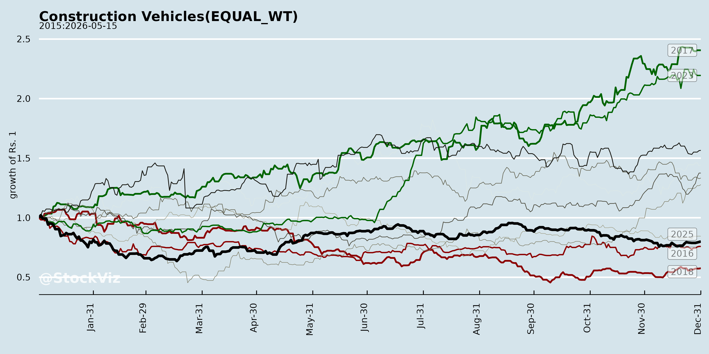
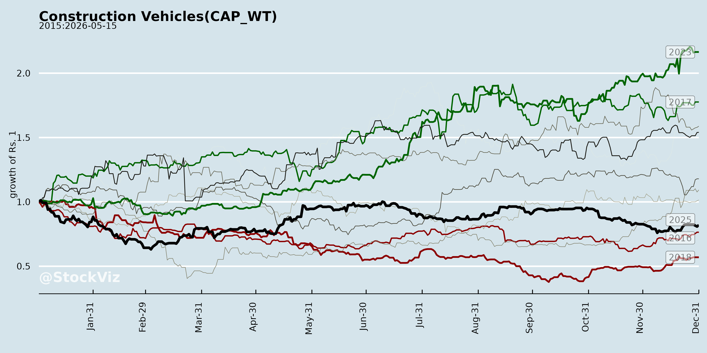
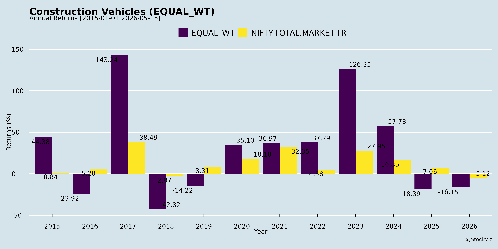
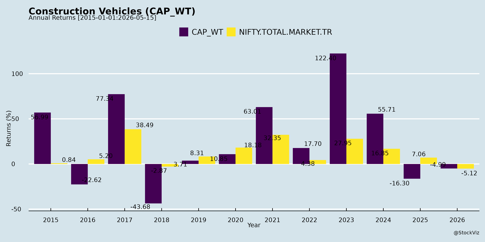
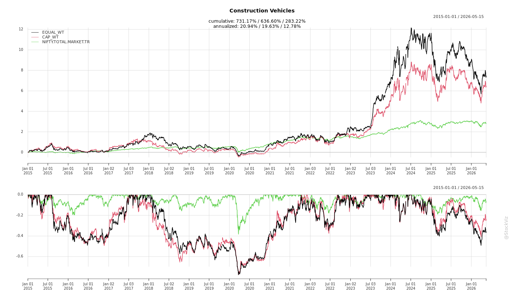
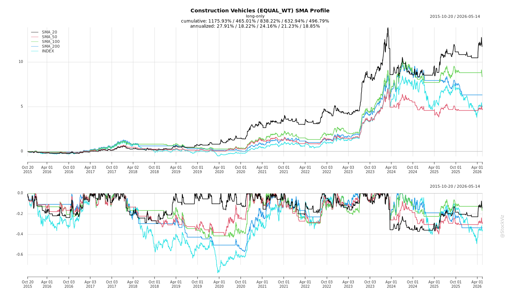
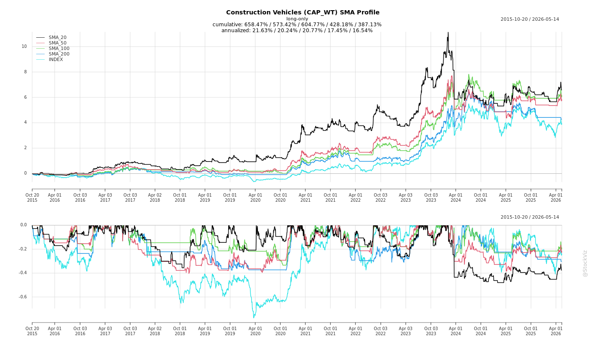
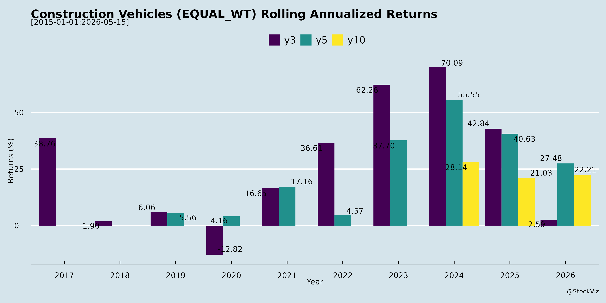
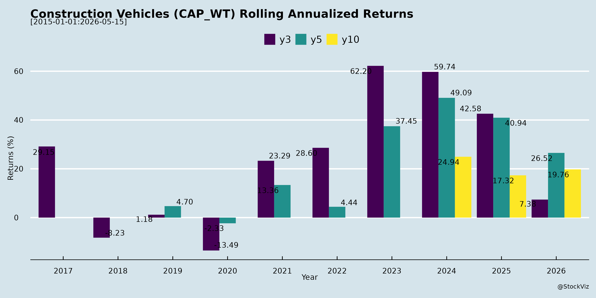

asof: 2026-04-15
Past and Recent Challenges
Historically and in recent quarters, heavy equipment, infrastructure, and defense manufacturing companies have navigated a range of severe financial, regulatory, and operational hurdles:
Evolution into Present and Future Opportunities
Despite these historical hurdles, the landscape has rapidly evolved, driven by corporate turnarounds, government initiatives, and strategic diversification:
asof: 2026-04-15
Supply Chain Disruptions and Raw Material Volatility The industry is highly vulnerable to supply chain bottlenecks and the non-availability of critical components from both domestic and international sources [1]. Companies have historically faced challenges due to heavy reliance on foreign supply chains for critical parts, causing major disarray when global disruptions occur [1, 2]. Even as constraints ease, shortages in specific components like steel castings and cabins continue to affect production timelines [3]. Furthermore, manufacturers are exposed to fluctuations in the cost of raw materials, such as specialty steel and imported OEM components [4]. The volatility of commodity markets, coupled with rising transportation costs, import duties, and currency exchange rates, directly threatens profitability if these increased costs cannot be passed on to customers [5].
Transition to Stringent Emission Norms A significant headwind currently impacting the construction and equipment manufacturing sector is the mandatory transition to new, stricter emission norms [6, 7]. For example, the shift from Trem 3 and Trem 4 engines to Trem 5 engines has caused temporary market disruptions [8]. This transition acts as a headwind in several ways: * Increased Production Costs: Integrating new emission-compliant technologies has driven up the cost of production and the final price of the equipment [6, 8, 9]. * Customer Hesitation: The new engines are more sophisticated and require specialized field training, making customers temporarily hesitant to adopt the new models and slowing down immediate demand [8].
Adverse Weather and Shifting Procurement Models External environmental factors and evolving business models are creating localized challenges for equipment demand. Extended monsoon conditions and delayed rains have severely disrupted project execution and led to patchy ordering, particularly in the mining and construction sectors [7, 10, 11]. Additionally, in the mining industry, there is a structural shift from direct departmental purchasing to Mine Developer and Operators (MDOs), forcing equipment manufacturers to adapt their sales strategies to a completely new set of buyers [10].
Macroeconomic Pressures and Cash Flow Challenges The broader economic environment presents distinct hurdles. The industry has witnessed a slower pace of project execution and cash flow challenges faced by customers, which delays new equipment orders and payments [7]. Additionally, there have been periods of slowdowns in capital expenditure by the government, directly impacting demand for construction and material handling equipment [12]. Companies also face macroeconomic risks such as volatile inflation, rising interest rates that increase borrowing costs, and shifts in trade policies or tariffs that could make importing critical components unviable [5, 13, 14].
Intense Competition and Onerous Contractual Terms Companies operating in this space, especially those heavily reliant on government and defense contracts, face complex, time-consuming, and highly competitive bidding processes [15]. This intense competition frequently leads to aggressive pricing, reduced profit margins, and a constant threat of losing market share [16, 17]. Furthermore, the contracts awarded by government entities often feature onerous conditions, including milestone-linked payments that strain working capital, and strict liquidated damages for any delays in delivery [18-20]. These contracts sometimes lack caps on direct or consequential damages, elevating the financial risk for manufacturers [18].
Labor Shortages and Regulatory Compliance The success of manufacturing and project execution is heavily dependent on a skilled workforce, yet the industry faces an inability to consistently attract and retain technically skilled personnel, such as engineers, supervisors, and technicians [21]. Industry-wide talent shortages and higher wage expectations threaten operating efficiencies [21]. Moreover, the implementation of new governmental labor regulations, such as the four new labor codes in India, introduces additional compliance requirements [22]. Failure to navigate these new frameworks could result in increased wage costs, penalties, or operational disruptions [22, 23].
asof: 2026-04-15
Strong Demand Driven by Infrastructure and Government Initiatives The heavy equipment and manufacturing industry is experiencing robust growth fueled by rapid urbanization, a booming construction sector, and increased government capital expenditure across infrastructure, real estate, energy, and defense [1], [2], [3], [4]. National initiatives such as “Make in India” and “Atmanirbhar Bharat” are heavily incentivizing domestic manufacturing and import substitution [1], [2]. Additionally, there is an ongoing operational shift toward mechanized construction and concreting that continues to support long-term demand for these products [5], [6].
Heavy Reliance on Government Contracts and Complex Bidding A substantial portion of industry revenue is derived from government departments, defense establishments, and public sector undertakings (PSUs) [7], [8], [9]. As a result, business performance is closely tied to defense procurement policies, national security priorities, and public capital outlays [9], [4]. Securing these projects requires navigating complex, time-consuming competitive bidding processes, where contracts are often awarded to the lowest bidder (L1) that meets stringent technical specifications [10]. These government contracts often impose onerous obligations, strict milestone-based delivery schedules, and significant liquidated damages or penalties for project delays or cost overruns [11], [12].
Supply Chain Vulnerabilities and the Push for Localization The manufacturing of heavy machinery depends heavily on the timely procurement of critical components such as engines, hydraulic systems, axles, and specialty steel from both domestic and international suppliers [13], [14], [15], [16]. The industry is highly vulnerable to global supply chain disruptions, which can negatively impact production schedules and lead to severe liquidity crunches [17], [18]. To mitigate these risks, companies are actively working on import substitution, localizing their supply chains, and bringing manufacturing of critical components into India [2], [19], [20], [21].
Technological Shifts and Strict Emission Norms Developing defense and heavy infrastructure equipment requires extensive R&D, design validation, and lengthy gestation periods [22], [23], [24]. Furthermore, the industry is currently undergoing a massive transition to comply with stricter new emission norms (such as moving to TREM 5 or CEV-5 standards) [25], [26], [27]. This transition involves manufacturing more sophisticated engines, which temporarily increases production costs, requires field training, and puts pressure on EBITDA margins until the market fully accepts the price hikes and new models [25], [27], [28].
High Working Capital Intensity Due to the nature of heavy manufacturing, the industry is highly capital intensive and requires significant working capital [29]. Companies must finance long product development periods, extended production cycles, and maintain large inventories (often 90 to 120 days for key raw materials) [16], [29]. Combined with extended payment cycles typical of government clients, this can sometimes lead to negative cash flows from operating activities, making efficient inventory and debt management absolutely critical for survival [7], [29], [30].
Strategic Global Partnerships and Export Expansion To enhance technological capabilities and product competitiveness, Indian manufacturers frequently form joint ventures, tie-ups, and strategic alliances with global industry leaders (e.g., from Japan, Europe, and the US) [31], [32], [33], [34]. These partnerships allow domestic companies to offer world-class products and act as manufacturing hubs for global markets [35], [36]. Consequently, expanding the export footprint into regions like the Middle East, Africa, Southeast Asia, and Australia is a primary strategy to build scale and diversify away from purely domestic revenue streams [37], [38], [39], [34].
asof: 2026-04-15
The heavy machinery, construction, and defense equipment industry is currently benefiting from a robust confluence of domestic and international tailwinds. These growth drivers range from massive government infrastructure spending to shifting global trade dynamics.
Government Infrastructure Investment and Capital Expenditure A primary tailwind for the industry is the Government of India’s increased focus and massive investments in infrastructure, real estate, construction, and defense [1, 2]. Recent national budgets have actively increased infrastructure investments, which is expected to return strong growth momentum to the construction equipment and crane sectors [3]. This boom is fueled by widespread public and private sector capital expenditure across key areas such as mining, steel, ports, energy, logistics, and railways [4, 5]. Ultimately, this sustained, infrastructure-led demand serves as a foundation for long-term industry growth [6].
“Make in India” and Import Substitution Initiatives National initiatives such as “Make in India” and “Aatmanirbhar Bharat” (Self-Reliant India) are significantly propelling the industry forward [1, 2]. The government’s strong commitment to import substitution encourages companies to manufacture equipment domestically rather than relying on foreign suppliers [7, 8]. Strategic partnerships within the industry are actively being formed to scale up the deployment of indigenously manufactured heavy equipment—such as heavy slew cranes—to reduce import dependence and strengthen national manufacturing capabilities [9, 10]. In the defense sector specifically, procurement policies that prioritize indigenization and increased budgetary allocations are acting as major catalysts for domestic manufacturers [5].
Sector-Specific Mega Projects The execution of highly ambitious, long-term national mega-projects is creating guaranteed demand pipelines for specialized machinery: * Maritime and Port Expansion: Initiatives like Maritime Vision 2030, the Sagarmala program, and Viksit Bharat 2047 envision the development of 12 mega ports and 200 minor ports, creating a massive, dedicated need for maritime and ship-to-shore cranes [11]. * Rail and Urban Transport: The urgent expansion of the country’s transportation networks, which includes multiple new metro rail systems, high-speed rail corridors, and road projects, is directly driving the need for highly specialized equipment like Tunnel Boring Machines and massive quantities of rolling stock [12].
Urbanization and the Shift to Mechanization Broad demographic and operational shifts are further expanding the market. Rapid urbanization and a booming construction sector act as natural growth engines for material handling and infrastructure equipment [7, 8]. Within the construction industry itself, there is an ongoing structural shift toward mechanized construction and the increasing adoption of mechanized concreting, which guarantees higher volume demand for equipment going forward [6, 13].
Global Trade, Exports, and Shifting Supply Chains Beyond domestic consumption, the industry is experiencing an equal push from international demand [14, 15]. The rise of global trade and e-commerce is creating broader market landscapes [7, 8]. Furthermore, ongoing global tariff discussions and shifting international supply chains are unlocking new opportunities for manufacturing facilities based in India, making the export market highly attractive [14, 15]. Supported by the government’s commitment to export promotion, these factors are actively aiding India’s long-term objective of becoming a premier global hub for high-capacity lifting solutions and heavy equipment [7, 16].
asof: 2026-04-15
The general outlook for the material handling, heavy machinery, and construction equipment industry is exceptionally positive and poised for robust growth in the coming years [1, 2]. This strong trajectory is primarily driven by both rising domestic requirements and expanding international opportunities [1, 3].
Key Macro Drivers and Government Support The industry’s growth is heavily supported by rapid urbanization, a booming construction sector, the rise of global trade, and e-commerce [4]. A major catalyst is the government’s continued focus on and increased investment in infrastructure, real estate, construction, logistics, and defence [3, 5, 6]. The upcoming government budget, which features increased infrastructure investments, is expected to further accelerate growth momentum in the construction equipment and crane businesses [7]. Furthermore, there is an ongoing shift towards mechanized construction and concreting, which provides a solid foundation for medium to long-term demand [2].
Import Substitution and the “Make in India” Initiative The industry is closely aligning with national initiatives such as “Make in India” and “Aatmanirbhar Bharat” (self-reliant India) [5, 8]. A significant trend is the push for import substitution, where companies are working to reduce reliance on imported machinery by scaling up the deployment of indigenously manufactured equipment [8]. To achieve this, domestic manufacturers are forming strategic joint ventures with global leaders to combine international engineering and technological expertise with India’s manufacturing base [9, 10]. This strategy aims to develop local supply chains, improve cost efficiency, and support India’s long-term objective of becoming a global hub for high-capacity lifting solutions [10, 11]. Companies are also actively working to localize their supply chains for critical components to improve capacity utilization [12].
Export and International Expansion In addition to domestic consumption, international demand represents an equally strong growth avenue [3]. Global tariff discussions and evolving trade dynamics are opening up new manufacturing opportunities for Indian companies [3]. Manufacturers are expanding their export operations and product lines to target diverse geographic regions, including the Asia Pacific, Southeast Asia, Australia, New Zealand, the Middle East, Africa, Latin America, and Europe [13-16].
Short-Term Transitions and Recovery While the medium and long-term drivers remain fully intact, the industry has recently had to navigate a period of transition and short-term headwinds [2, 17]. Recent quarters were impacted by extended monsoon conditions, a slower pace of project execution, cash flow challenges among customers, and temporary pauses in government capital expenditure [7, 18]. Additionally, the industry faced a major shift toward new, stringent emission norms (such as the transition to Trem 5 / CEV-5 engines) [18, 19]. This transition to more sophisticated engines temporarily increased production costs, required customer training, and led to a brief adjustment period in the market [19, 20]. However, these transitional effects are now normalizing, and companies are seeing a strong resumption in order bookings and demand [21, 22].
Sector-Specific Opportunities * Rail, Metro, and Infrastructure: There is a massive opportunity pipeline for rolling stock to replace existing fleets and supply new high-speed and metro rail corridors [23-25]. Furthermore, infrastructure projects—including metro lines, high-speed rail, and roads—are creating a massive need for Tunnel Boring Machines (TBMs), with an estimated $5 billion requirement in India over the next 10 years [26, 27]. Port operations and shipbuilding are also driving significant demand for maritime cranes [28-30]. * Defence Equipment: The defence sector provides a steady and highly lucrative pipeline for the industry [31, 32]. There is an increased focus on providing highly customized, technologically advanced material handling and transportation solutions for the Army, Air Force, and Navy [33, 34]. Because national security objects frequently change in design, there is a continuous requirement for specialized handling equipment, making this a highly resilient business segment [34].
Copyright © 2023 SAS Data Analytics Pvt. Ltd. All rights reserved.